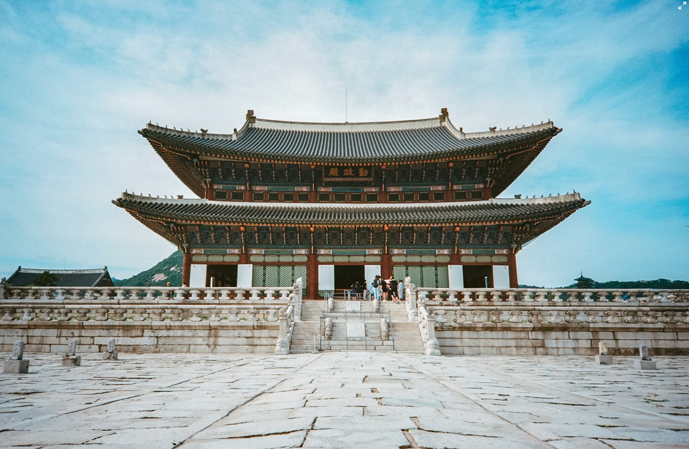
Seul
Stolica pełna kontrastów. Odwiedź tradycyjną wioskę Bukchon Hanok i nowoczesną wieżę N Seoul Tower.
Korea Południowa to fascynujący azjatycki kraj, który oferuje zarówno tętniące życiem metropolie, jak i spokojne, zabytkowe świątynie ukryte w górach. To ojczyzna K-popu, pysznego kimchi i niesamowitej technologii.

Stolica pełna kontrastów. Odwiedź tradycyjną wioskę Bukchon Hanok i nowoczesną wieżę N Seoul Tower.
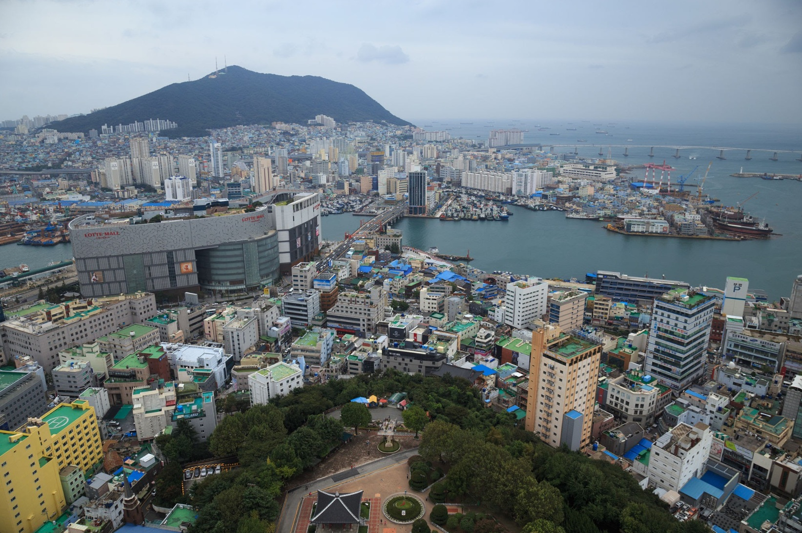
Drugie co do wielkości miasto, słynące z pięknych plaż, świątyni Haedong Yonggungsa i owoców morza.
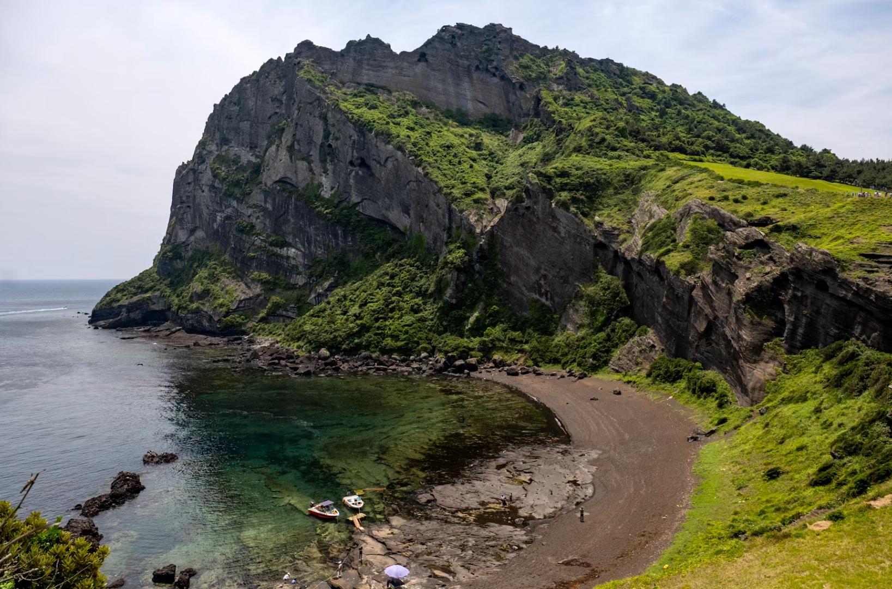
Rajska wyspa o wulkanicznym krajobrazie. Idealne miejsce na relaks i podziwianie natury.
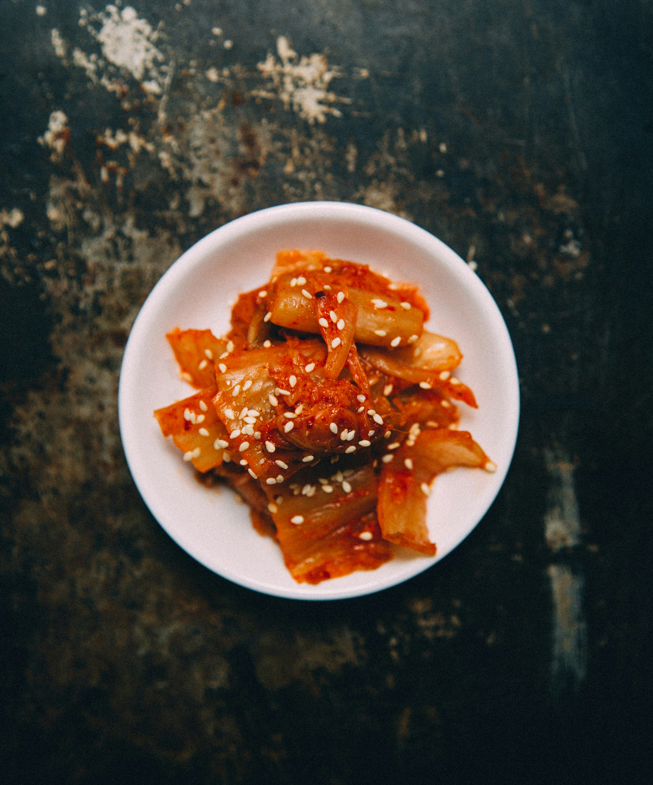
Podstawa koreańskiej diety. Fermentowane warzywa, najczęściej kapusta pekińska, z dodatkiem chili i czosnku.
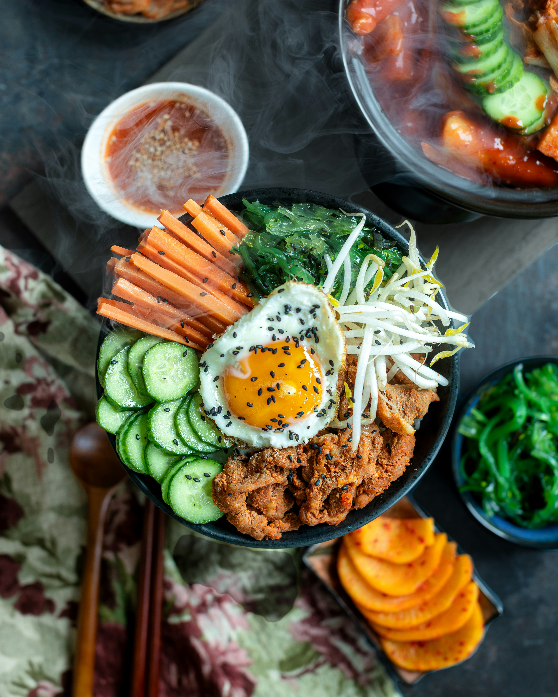
Miska ciepłego ryżu z kolorowymi warzywami, pastą gochujang, mięsem i sadzonym jajkiem. Pyszne i zdrowe!
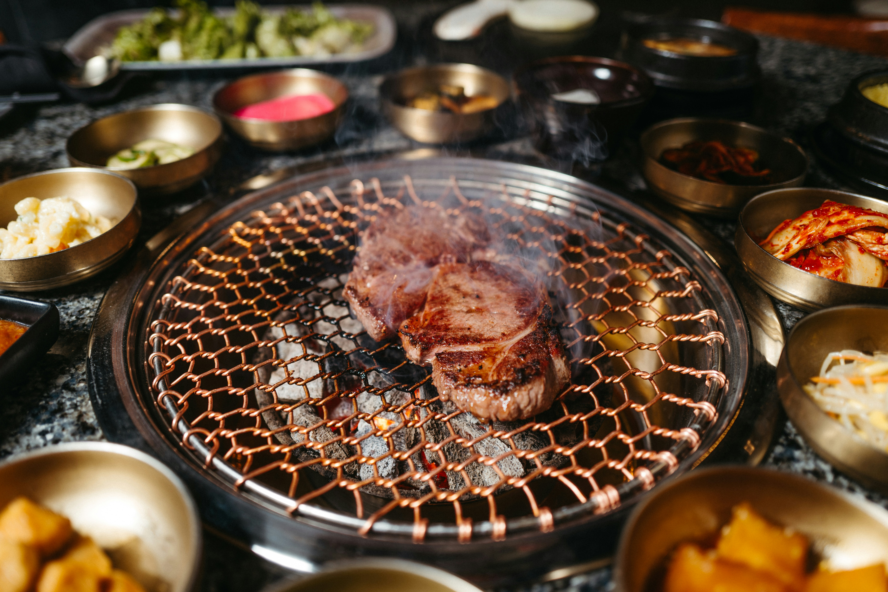
Interaktywne doświadczenie kulinarne. Samodzielnie grillujesz soczyste kawałki mięsa bezpośrednio przy swoim stoliku.
Kliknij zdjęcie, aby je powiększyć.
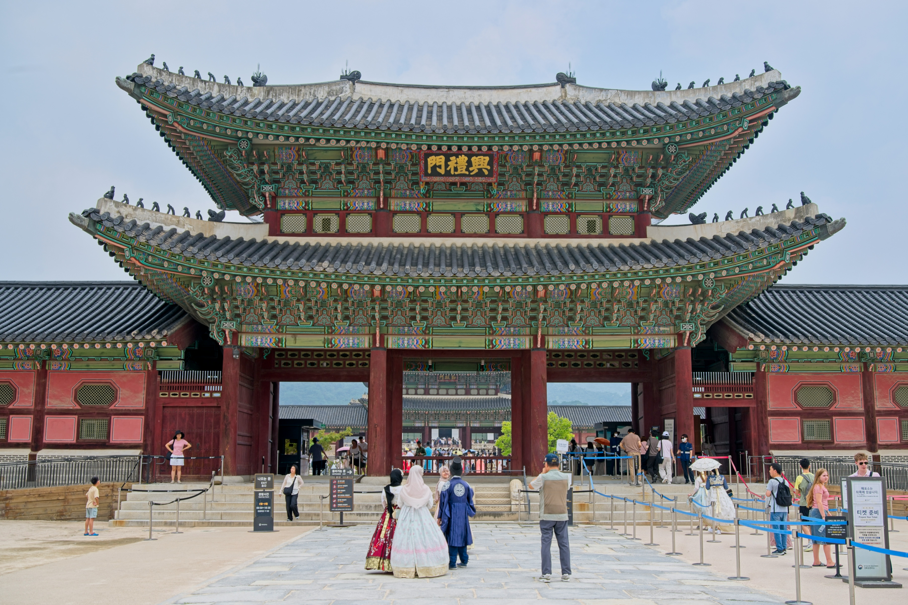
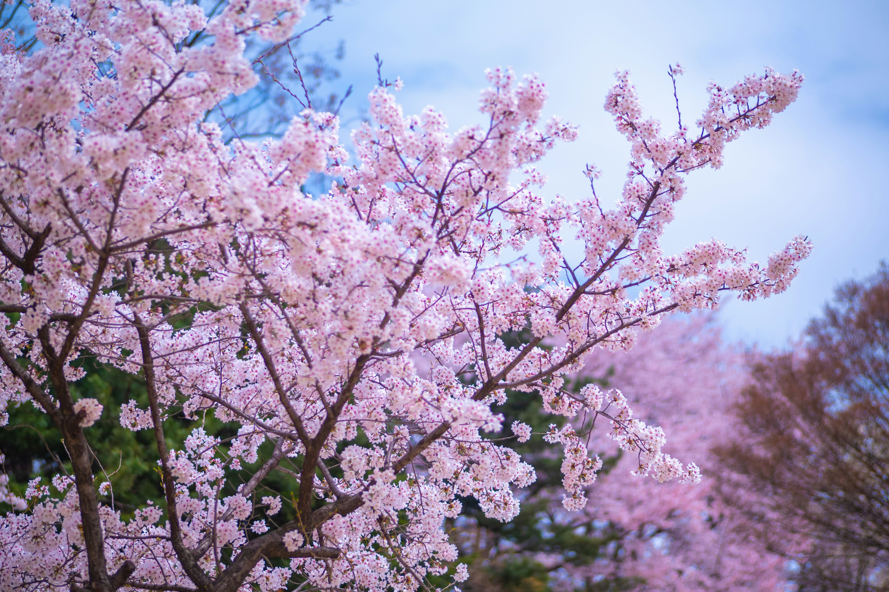
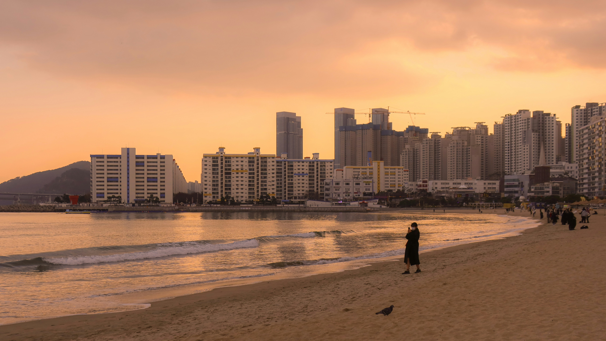
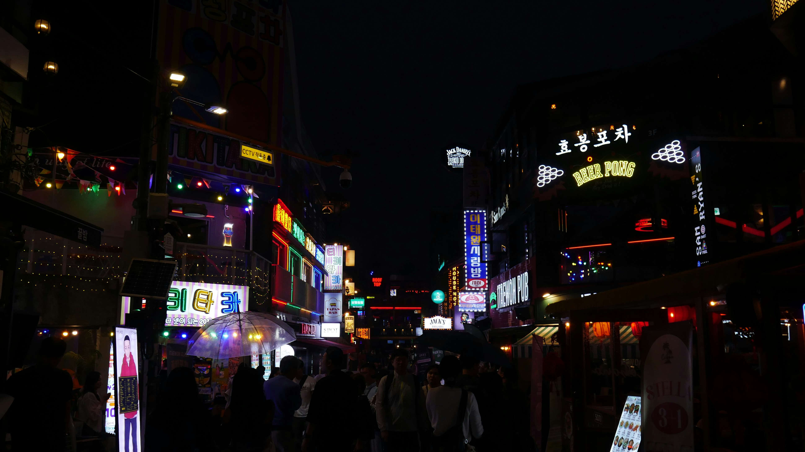
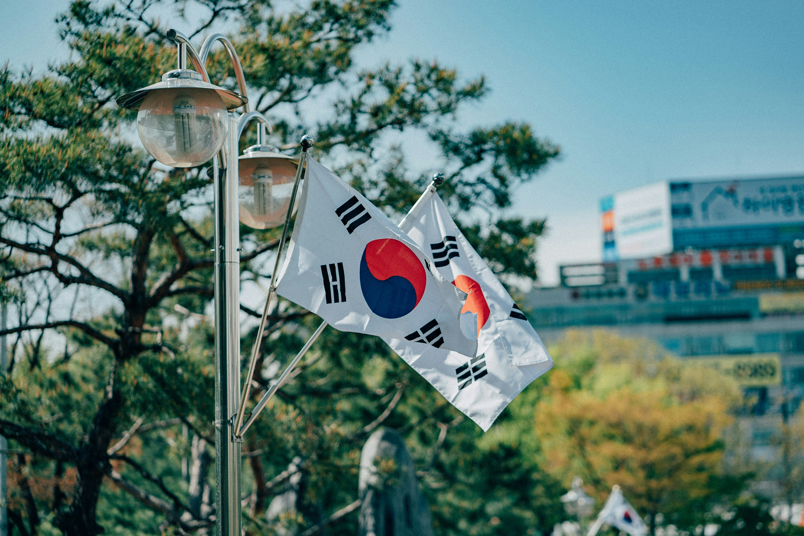